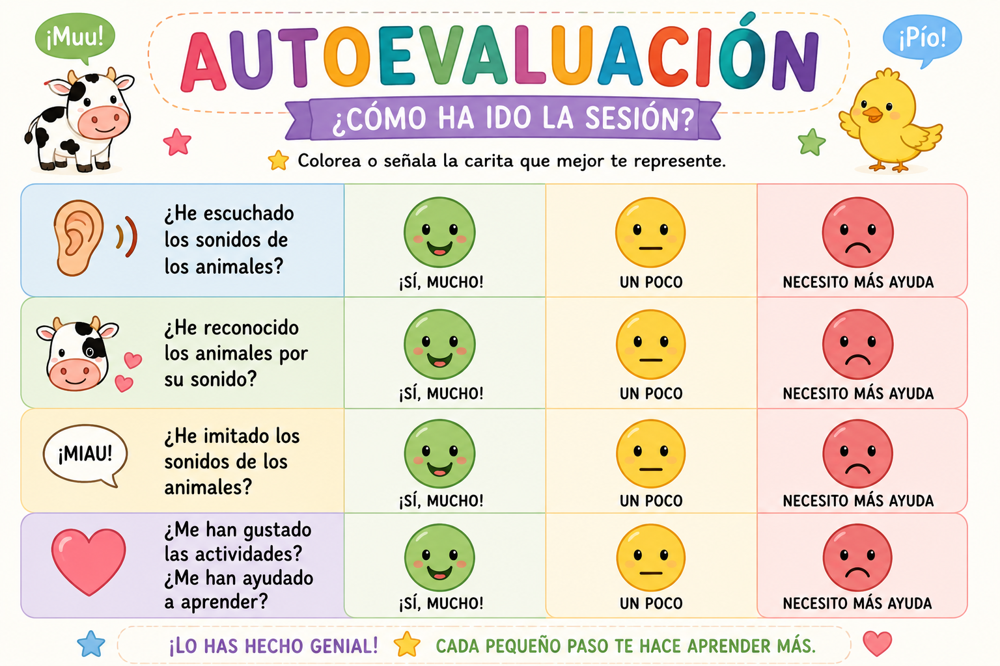

EVALUACIÓN PRODUCTO FINAL
La evaluación del producto final será global, continua y formativa, tal y como establece la normativa vigente para la etapa de Educación Infantil.
Se llevará a cabo principalmente mediante la observación directa y sistemática, valorando la participación del alumnado y su evolución en el desarrollo del lenguaje oral a lo largo de la situación de aprendizaje.
Para la valoración del producto final (infografía y podcast), se tendrán en cuenta los siguientes aspectos:
Participación activa en la actividad.
Capacidad para nombrar animales.
Producción de sonidos y palabras.
Construcción de frases sencillas.
Mejora progresiva en la pronunciación y expresión oral.
Dado que se trata de alumnado de 4 años, la elaboración de los productos será guiada por la docente y, en su caso, con apoyo de las familias, por lo que se valorará especialmente el esfuerzo, la participación y la evolución individual de cada alumno o alumna.
INSTRUMENTO DE EVALUACIÓN (LISTA DE COTEJO)
¿CUÁNDO SE EVALÚA?
Durante todas las sesiones (observación continua)
En la realización del producto final
En las actividades orales
¿CÓMO SE LO EXPLICO AL ALUMNADO?
“La profe va a escuchar cómo hablas, cómo dices los animales y cómo participas. Lo importante es intentarlo y participar.”
La evaluación del proceso conjunto será a través de una rúbrica que se adjunta en el siguiente nodo y a través de una autoevaluación que se adjunta a continuación.

La evaluación en esta situación de aprendizaje será global, continua y formativa, tal y como establece la normativa para la etapa de Educación Infantil.
Se llevará a cabo mediante la observación directa y sistemática del alumnado a lo largo de todas las sesiones, valorando su participación, su evolución en el lenguaje oral y su implicación en las actividades propuestas.
Durante el desarrollo de la situación de aprendizaje, la docente observará:
La capacidad para nombrar animales.
La producción de sonidos y palabras.
La construcción de frases sencillas.
La participación en las actividades y juegos.
El interés por comunicarse con los demás.
Asimismo, se tendrá en cuenta la realización del producto final, que consiste en una infografía interactiva y un podcast sencillo, en los que el alumnado participa de forma oral.
Dado que se trata de alumnado de 4 años, la elaboración de estos productos se realizará de forma guiada por la docente y, en su caso, con la colaboración de las familias, por lo que se valorará especialmente el esfuerzo, la participación y la evolución individual de cada alumno o alumna.